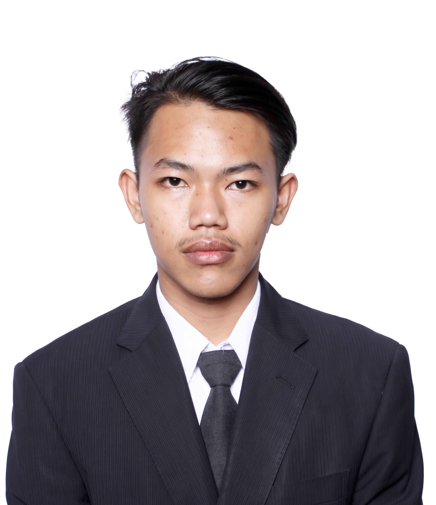

Tentang Saya
Saya adalah seorang lulusan Sarjana Terapan (S.Tr.) di bidang Teknologi Rekayasa Internet dari Politeknik Elektronika Negeri Surabaya. Saya memiliki minat yang kuat dalam pengembangan teknologi, manajemen proyek, atau pelayanan publik. Selama masa studi, saya telah membekali diri dengan kombinasi pemahaman teoretis yang kuat dan keterampilan praktis terapan. Saya berdedikasi tinggi, berorientasi pada pemecahan masalah (problem-solving), dan selalu antusias untuk belajar hal baru serta berkolaborasi dalam tim untuk mencapai tujuan organisasi.
Keahlian Teknis (Hard Skills)
AI Dev & Management
- Machine Learning & Deep Learning
- Data Processing & Analytics
- AI Frameworks (TensorFlow/Scikit)
- Model Evaluation & Deployment
Cloud & System Admin
- Linux Server Management
- Virtualization & Docker
- AWS / Google Cloud (GCP)
Internet of Things (IoT)
- Mikrokontroler (ESP32/Arduino)
- MQTT & Sensor Integration
- Sistem Monitoring Real-time
Pemrograman & Web
- Python (Scripting/Automation)
- Dasar C/C++
- RESTful API
- Web Server (Nginx/Apache)
Pengalaman Kerja & Magang
IT Support
Jan 2025 - Jun 2025PT. Lintech Duta Pratama (Lintech Seaside Facility)
- Membantu Pembuatan Projek Scan Absen.
- Membantu Pembuatan Gerbang Wireless.
Pendidikan
D4/S1 Teknologi Rekayasa Internet
Politeknik Elektronika Negeri Surabaya
Lulus dengan IPK 3.44 / 4.00
"Rancang Bangun Framework Deteksi Serangan Siber Berbasis Kecerdasan Buatan untuk Keamanan IoV." (Judul Tugas Akhir)
SMAU BP Amanatul Ummah Mojokerto
SMP Bina Anak Sholeh Tuban
MI Mazra'atul Ulum 02 Paciran
Soft Skills
Bagikan CV Ini
Scan untuk membuka di perangkat lain
Memuat tautan...